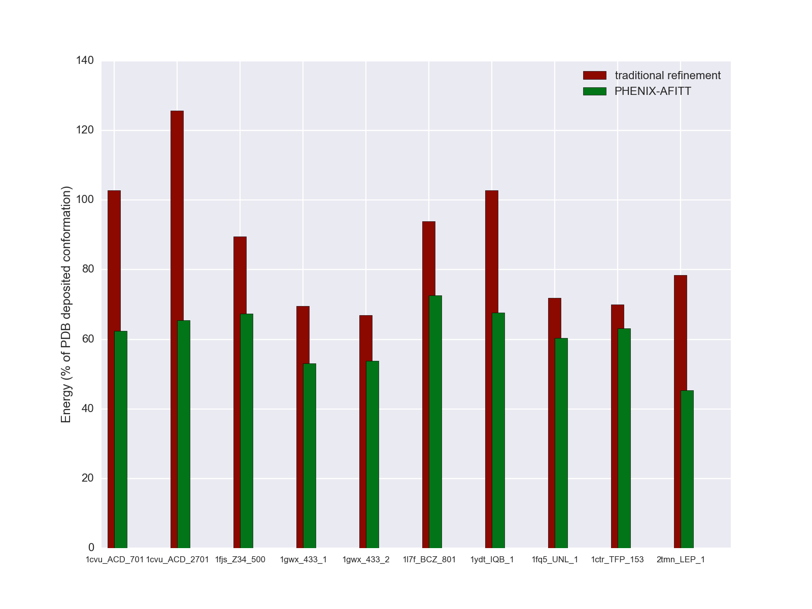

Pawel Janowski and Nigel W. Moriarty
AFITT refinement in Phenix combines the power and functionality of Phenix crystallographic refinement with OpenEye AFITT's [Wlodek2006] implementation of the MMFF94s [Halgren1996] force field for accurate modeling of small molecule stereochemistry. In combination they provide the user with a cutting-edge crystallographic refinement package while ensuring chemically sensible ligand geometry that significantly reduces conformational strain as compared to traditional refinement. Phenix.refine is a component of the highly regarded Phenix suite of crystallography software. AFITT is OpenEye's comprehensive package for ligands in crystallography. It provides an automated real space ligand fitting process, refinement dictionary generator, implementation of MMFF94, MMFF94s, PM3 and AM1 force fields and the OpenEye's core SZYBKI optimizer.
Phenix.refine employs a maximum likelihood approach to minimize the following residual or energy function:
E_{Phenix}=E_{x-ray}+E_{geometry}
where, in the presence of ligands, the second term in the above equation can be further broken down into:
E_{geometry}=E_{protein}+E_{ligand_non-bonded}+E_{ligand_bonded}
Phenix-AFITT replace Phenix's bonded ligand term with an AFITT term, thus yielding the following final energy function:
E_{Phenix-AFITT}=E_{x-ray}+E_{geometry}-E_{ligand_bonded}^{Phenix}+E_{ligand_bonded}^{AFITT}
Phenix's implementation of AFITT is versatile, easy to use and powerful. It can support any ligand for which a cif dictionary has been created. Refinements can include different types of ligands and multiple instances of each ligand type. Support for ligands with full or partial alternate conformations is fully integrated as is refinement of ligands covalently bound to the macromolecule.
First, the user should make sure that the latest version of Phenix and AFITT are installed. On Linux and OSX, make sure that the OE_EXE environment variable is set and points to the execuable (usually flynn). For example:
[~:]$ echo $OE_EXE /usr/local/bin/flynn
Second prepare the .pdb, .mtz and .cif dictionaries for the ligand in your model. Now running Phenix-AFITT refinement is just a question of running standard Phenix.refine with some additional keywords. For example like this:
phenix.refine mymodel.pdb mymodel.mtz myligand.cif use_afitt=True
afitt.ligand_file=myligand.cif afitt.ligand_names=UNL,BCL
The above command will run Phenix.refine with AFITT energy and gradients applied to the ligands UNL and BCL according to the topology provided in the file myligand.cif. The following is the full list of AFITT-related keyword that the user can specify on the command line when running Phenix.refine:
- REQUIRED KEYWORDS
use_afitt - turn on ligand refinement with AFITT. (default = False)
- afitt.ligand_file_name - relative path to cif dictionary file that
- defines the ligand topology for AFITT. Note that this can be different from the cif file provided to Phenix.refine on the command line without any keyword. The former specifies the topology of the ligand for AFITT. The actual bond and angle parameters in it are irrelevant. The latter specifies the both topology and parameters of non-standard residues for Phenix. Any ligands that are not refined by AFITT (using the "ligand_names" keyword) will be refined by Phenix.refined using the parameters in this file.
- afitt.ligand_names - three letter ligand name codes. If multiple
- ligand types are being refined, separate each three letter code by a comma, no spaces. For a given ligand name, AFITT will refine all instances of that ligand as well as alternate conformations of each ligand.
OPTIONAL KEYWORDS
afitt.ff - AFITT force field to use. Options are: mmff94s, mmff94, am1, pm3. (default=mmff94s)
afitt.scale - weight to place on the AFITT ligand energy term. (default=10)
Two auxiliary command line programs are provided for convenience. mmtbx.afitt returns the AFITT ligand conformational energy given a pdb file (for coordinates) and cif file (for topology) and the three letter names of the ligands the user is querying. Optionally the user can specify the AFITT force field to use using the "-ff" keyword (default=MMFF94s). Example usage:
[~/work/afitt:]$ mmtbx.afitt 1cvu.pdb 1cvu.cif BOG,ACD BOG_702_ AFITT_ENERGY: 2152.1468 BOG_703_ AFITT_ENERGY: 2151.5215 BOG_704_ AFITT_ENERGY: 2137.6938 BOG_2702_ AFITT_ENERGY: 2145.0459 BOG_2704_ AFITT_ENERGY: 2099.0437 ACD_701_ AFITT_ENERGY: 136.1296 ACD_2701_ AFITT_ENERGY: 99.7701
mmtbx.afitt_fd runs a finite difference test to check that the Phenix-AFITT energy and gradients are being properly calculated. This is the first test to run if you think something may be wrong with the implementation of the refinement algorithm. mmtbx.afitt_fd requires a pdb file, cif file, ligand names and atom number on whose x-coordinate the finite difference test will be calculated. An optional "-v" keyword provides more verbose output about the individual terms of the energy function. Example usage:
[~/work/afitt:]$ mmtbx.afitt_fd 1cvu.pdb 1cvu.cif ACD 9321 -> 0.134306495 -> 0.134306174 TEST PASSES: (analytical - numerical)= -0.000000321
As always, running an auxiliary program with the "-h" keyword provides helpful information about the program.

Example ligand conformational energies after traditional refinement and after refinement with Phenix-AFITT. Energies are shown as a percentage of the energy of the ligand conformation deposited in the PDB.
| [Wlodek2006] | Wlodek, S. and Skillman, A. G. and Nicholls, A.: Automated ligand placement and refinement with a combined force field and shape potential., Acta Crystallographica Section D 2006, 62:741-749. |
| [Halgren1996] | Halgren, Thomas A.: Merck molecular force field. I. Basis, form, scope, parameterization, and performance of MMFF94., Journal of Computational Chemistry 1996, 17:490-519. |